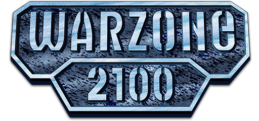

This guide will help you get started playing Warzone 2100.
The Warzone 2100 Project has its website at  http://wz2100.net.
http://wz2100.net.
If you want to talk to other Warzone 2100 players, visit the forum at
http://forums.wz2100.net
Or you can fire up an IRC client and connect to the channels #warzone2100 and #warzone2100-games on the Freenode network.
If you’re interested in developing Warzone 2100, the Project is always looking
for help. Go to http://developer.wz2100.net
If you want more information about Warzone 2100, including mod information,
individual component statistics, and more, go to
http://guide.wz2100.net
Enjoy Warzone 2100!
